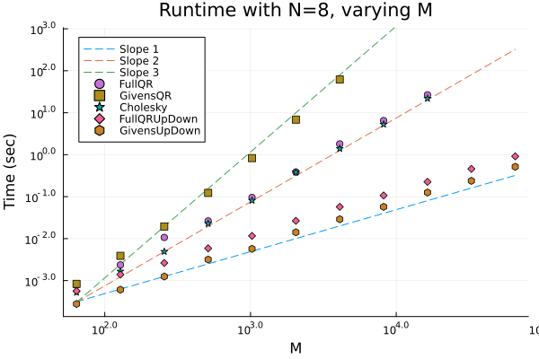

CaratheodoryPruning.jl Documentation
TODO: Describe the problem geometrically, perhaps a figure.
TODO: Describe the problem in a Linear Algebraic format.
The base caratheodory pruning method takes in a matrix V of size M by N, and a vector of weights of length w_in. It then returns a pruned vector of length M weights, w, and the nonnegative indices, inds. If return_errors is set to true, additionally returns a vector of moment errors at each iteration.
CaratheodoryPruning.caratheodory_pruning — Functioncaratheodory_pruning(V, w_in, kernel_downdater, prune_weights![; caratheodory_correction=false, progress=false, zero_tol=1e-16, return_errors=false, errnorm=norm])
Base method for Caratheodory pruning of the matrix V and weights w_in. Returns a new set of weights, w, and a set of indices, inds, such that w_in only has nonzer0 elements at the indices, inds, and Vᵀw_in - V[inds,:]ᵀw_in[inds] ≈ 0.
Uses the kernel_downdater object to generate kernel vectors for pruning, and the prune_weights! method to prune weights after kernel vectors have been formed.
If caratheodory_correction=true, then uses a linear solve at the end to reduce error in the moments.
If progress=true, displays a progress bar.
zero_tol determines the tolerance for a weight equaling zero.
If return_errors=true, returns an additional vector of moment errors throughout the procedure.
errornorm is the method called on Vᵀw_in - V[inds,:]ᵀw_in[inds] to evaluate errors, only used if caratheodory_correction=true or return_errors=true. Defaults to LinearAlgebra.jl's norm method.
caratheodory_pruning(V, w_in[; kernel=:CholeskyDowndater, pruning=:first, caratheodory_correction=false, return_errors=false, errnorm=norm, zero_tol=1e-16, progress=false, kernel_kwargs...])
Helper method for calling the base caratheodory_pruning method.
Takes in a symbol for kernel, and forms a KernelDowndater object depending on what is passed in. Also passes additional kwargs into the KernelDowndater:
Options include :FullQRDowndater or :FullQR, :GivensDowndater or :Givens, :CholeskyDowndater or :Cholesky, :FullQRUpDowndater or :FullQRUpDown, and :GivensUpDownDater or :GivensUpDown.
Takes in a symbol for pruning, and chooses a pruning method depending on what is passed in. Options are :first or :minabs.
See the other caratheodory_pruning docstring for info on other arguments.
Here is a full example of generating a random matrix V and random, positive vector of weights w_in, computing the moments eta, using caratheodory_pruning to generate pruned weights w, and computing the moment error.
using CaratheodoryPruning
using Random
M = 100
N = 10
V = rand(M, N)
w_in = rand(M)
eta = transpose(V) * w_in
w, inds = caratheodory_pruning(V, w_in)
w[inds]10-element Vector{Float64}:
15.185644654891819
8.400963807226006
3.196298261966243
8.244527318355297
6.796538077871896
3.7924018970962456
1.6089163427992395
2.6742309709327965
2.3338485727851035
3.302996034120632error = maximum(abs.(V[inds,:]'w[inds] .- eta))4.263256414560601e-14TODO: Higher dpi images for documentation. 